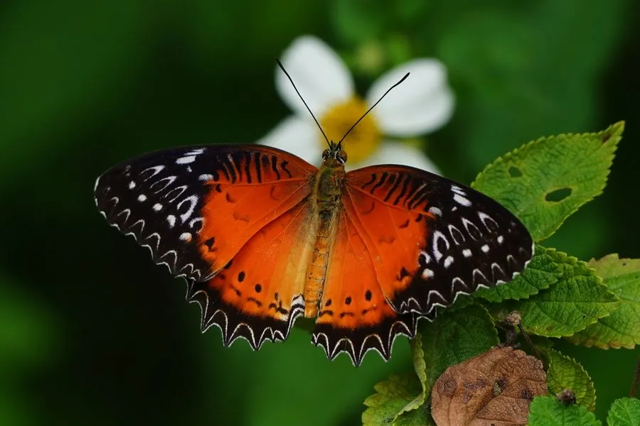

昆虫 · 动物界
红锯蛱蝶 Cethosia biblis

翅面橙红、边缘呈锯齿状的常见蛱蝶，翅腹面花纹如书页，幼虫取食西番莲，分布于中国南方至东南亚。
- 分类
- 门节肢动物门纲昆虫纲目鳞翅目科蛱蝶科属锯蛱蝶属
- 栖息环境
- 林缘、灌丛和花园，西番莲等藤本植物附近
- 地理分布
- 中国南方、东南亚和南亚
- 保护级别
- 暂无评估
物种志
红锯蛱蝶翅展约 7–9 cm，雄蝶翅面橙红至砖红色，前翅端部黑色带白斑，后翅边缘有黑色齿状纹，翅缘呈锯齿状；翅腹面有复杂的白色和褐色花纹，像翻开的书页，因此英文名意为书页蝶。雌蝶翅色偏暗，以黑褐和橙黄为主。
它生活在林缘、灌丛和西番莲生长的地方，成虫飞行缓慢优雅，喜欢访花。雌蝶把卵产在西番莲的叶片上，幼虫取食叶片，身体带刺毛。红锯蛱蝶分布于中国南方、东南亚和南亚，是热带亚热带地区常见的观赏蝴蝶，常出现在蝴蝶园和生态旅游区，幼虫寄主西番莲也是它的重要识别线索。它的蛹像一片卷曲的叶子，挂在西番莲藤蔓上，羽化后留下空蛹壳。
形态与习性
- 食性幼虫取食西番莲等西番莲科植物；成虫吸蜜
- 翅展约 7–9 cm
- 识别翅面橙红，翅缘锯齿状，翅腹面如书页
- 生活史卵产于西番莲叶片，幼虫带刺毛
- 分布中国南方、东南亚和南亚
趣味知识
- 红锯蛱蝶的翅腹面花纹像翻开的书页，因此也叫书页蝶。
- 它的翅缘呈锯齿状，和同属的白带锯蛱蝶很像。
- 幼虫取食西番莲叶片，成虫常在花丛间缓慢飞行。